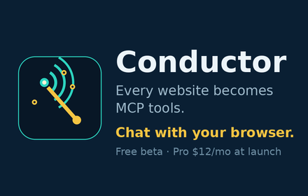

Conductor
AI Browser Agent & MCP Tools
Turn any website into MCP tools and drive it by chat. Reads run free, writes ask first. Local-first with Ollama.
Live on the Chrome Web Store · v1.3.0 update in review
Get Conductor on the Chrome Web Store
Pro $12/mo planned · free during review launch

What it does
- Any site becomes MCP tools. Conductor inspects the page you're on and exposes its actions as tools your agent can call.
- Drive it by chat. Describe the task; Conductor works the page step by step while you watch.
- Reads free, writes ask first. Browsing and reading run without friction — anything that changes a page stops for your approval.
- Local-first with Ollama. Runs against a local model on your own machine, with no silent fallback to the cloud.
- Site Scanner & Skills Library. Scan a site's capabilities once, then reuse saved skills on it later.
- Activity log. Every action the agent takes is logged, so you can see exactly what happened in a session.
Privacy
Local-first. Page data leaves the device only on a route the user picks — with a local Ollama model, nothing leaves at all.